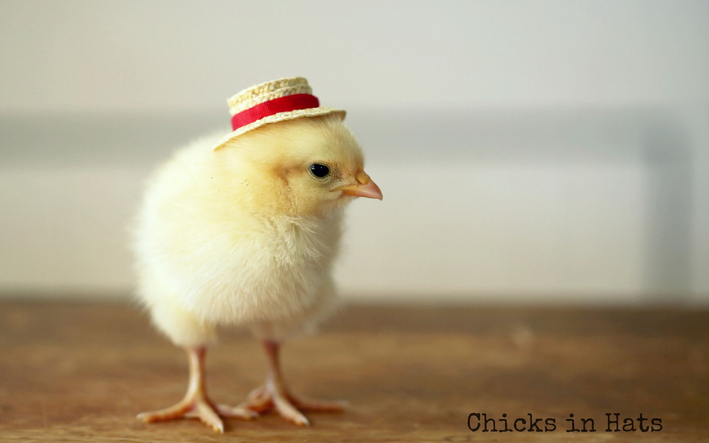
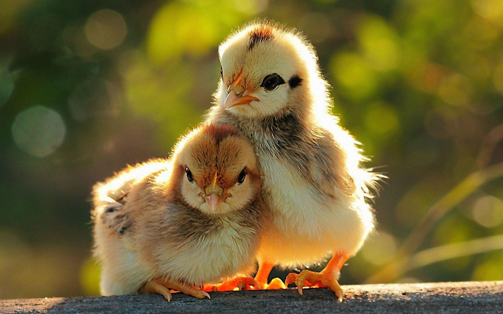
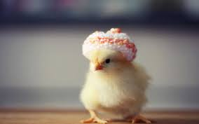

The chicken (Gallus gallus domesticus) is a domesticated subspecies of the red junglefowl originally from Southeastern Asia. Rooster or cock is a term for an adult male bird, and younger male may be called a cockerel. A male that has been castrated is a capon. An adult female bird is called a hen and a sexually immature female is called a pullet. Originally raised for cockfighting or for special ceremonies, chickens were not kept for food until the Hellenistic period (4th–2nd centuries BC).[1][2] Humans now keep chickens primarily as a source of food (consuming both their meat and eggs) and as pets. Chickens are one of the most common and widespread domestic animals, with a total population of 23.7 billion as of 2018,[3] up from more than 19 billion in 2011.[4] There are more chickens in the world than any other bird.[4] There are numerous cultural references to chickens – in myth, folklore and religion, and in language and literature. Genetic studies have pointed to multiple maternal origins in South Asia, Southeast Asia, and East Asia,[5] but the clade found in the Americas, Europe, the Middle East and Africa originated from the Indian subcontinent. From ancient India, the chicken spread to Lydia in western Asia Minor, and to Greece by the 5th century BC.[6] Fowl have been known in Egypt since the mid-15th century BC, with the "bird that gives birth every day" having come from the land between Syria and Shinar, Babylonia, according to the annals of Thutmose III.[7][8][9]
An adult male is a called a 'cock' or 'rooster' (in the United States) and an adult female is called a 'hen'.[10][11] Other terms are: 'Biddy:' a newly hatched chicken[12][13] 'Capon:' a castrated or neutered male chicken[a] 'Chick:' a young chicken[14] 'Chook' /tʃʊk/: a chicken (Australia, informal)[15] 'Cockerel:' a young male chicken less than a year old[16] 'Pullet:' a young female chicken less than a year old.[17] In the poultry industry, a pullet is a sexually immature chicken less than 22 weeks of age.[18] 'Yardbird:' a chicken (southern United States, dialectal)[19] "Chicken" was originally a term only for an immature, or at least young, bird.[when?] However, thanks to its usage on restaurant menus, it has now become the most common term for the subspecies in general, especially in American English. In older sources, 'chicken' as a species were typically referred to as 'common fowl' or 'domestic fowl'.[20] 'Chicken' may also mean a 'chick' (see for example Hen and Chicken Islands).[21]
Chickens are omnivores.[26] In the wild, they often scratch at the soil to search for seeds, insects and even animals as large as lizards, small snakes,[27] or sometimes young mice.[28] The average chicken may live for 5-10 years, depending on the breed.[29] The world's oldest known chicken lived 16 years according to Guinness World Records.[30]
  